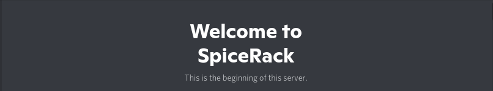

Hi friends.
So, this is the Spicerack Compendium, pretty neat, right? This was one of the reasons why I didn't do the Secret Santa thingie (although I'm sure a few of you are still upset about that lol)
I'll get to the point, I love ya'll, ya'll are some of the best friends I could ask for. You welcomed me with open arms last year and allowed me to become part of a group of just amazing people. And it was all because of a server, Spicerack. So, in commemeration, I wanted to make something to psuedo-document psuedo-celebrate the server. And what better way than a sort of virtual museam?
So, I hope you like it as much as I do, and make sure to message me if I forgot, misconstrued, or you want me to add something.
Love, Dahlia :)
P.S: Please note this is a work in progress, I still have a lot to add and fix!